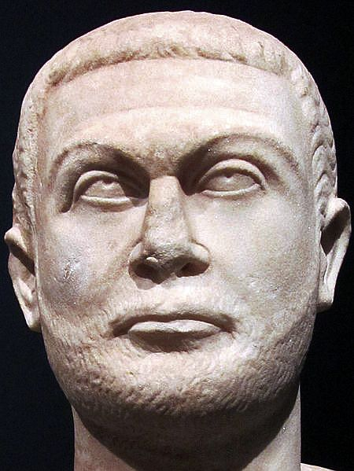

Rzym
Rzym założono w Lacjum środkowej części Italii. Powstał w VIII wieku p.n.e. (rok 753). Od północy graniczy z Etruskami od południa z Grekami.
Rzymem początkowo władało siedmiu królów. Pierwszy miał być Romulus który zabił swojego brata bliźniaka Romusa. Ostatnim władcą był Tarkwiniusz Pyszny, który został obalony 509 r. p.n.e. Zniechęceni do rządów Królewskich Rzymianie zlikwidowali monarchię i ustanowili republikę.
Kiedy rozpoczęło się imperium?
Uważa się, że imperium rozpoczęło się w 27 roku p.n.e. p.n.e., kiedy Gajusz Oktawian otrzymał od Senatu tytuł Augusta (uznany przez bogów). ---> Ugruntowało to pozycję Oktawiana jako najważniejszej postaci w państwie i doprowadziło do ostatecznego końca Republiki Rzymskiej..
Jaka była forma Rządów w Cesarstwie?
Pierwotnie formą rządów w Cesarstwie był pryncypat; formalnie utrzymano poprzedni ustrój, w którym cesarz zachowywał najwyższą władzę w państwie, sprawował wszystkie ważne urzędy w republice i kontrolował wojsko. W wyniku reform Dioklecjana i Konstantyna nastała era dominatu ze znacznie mocniejszą pozycją cesarską.
Dioklecjan
Dioklecjan podzielił kraj na 12 diecezji, 110 prowincji, wojsko podzielił na stałe i rezerwowe, rozwijał budownictwo wojskowe i miejskie. W latach 303-304 wydał cztery edykty przeciw chrześcijanom, co spowodowało ich prześladowania

Rozpad
W 395 roku cesarstwo definitywnie rozpadło się na części zachodnią i wschodnią. Cesarstwo zachodniorzymskie, po dwukrotnym zdobyciu Rzymu przez barbarzyńców, upadło w 476 roku w wyniku problemów wewnętrznych i wędrówki ludów.
"Przybyłem, zobaczyłem, zwyciężyłem!” [łacina: "Veni, vidi, vici!"]
~ Juliusz Cezar